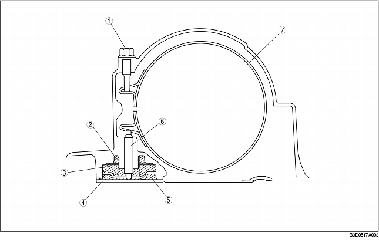

2-4 brake band operation
• When the hydraulic pressure acts between the servo retainer and the servo piston (2-4 brake band engagement side), the servo piston acts on the 2-4 brake band to lock the 2-4 brake drum. At the same time, the servo return spring also works as resistance to obtain the optimal 2-4 brake band engagement force.
When the hydraulic pressure acts between the servo piston and the transaxle case (2-4 brake band release side), the servo piston is pushed to the servo retainer side. This causes the 2-4 brake band to extend by its own spring force and unlock the 2-4 brake drum.
When the hydraulic pressure acts between the servo retainer and the servo piston and between the servo piston and the transaxle case simultaneously, the servo piston is pushed to the servo retainer side and the 2-4 brake drum is unlocked because of the difference in the two areas and spring force.

.